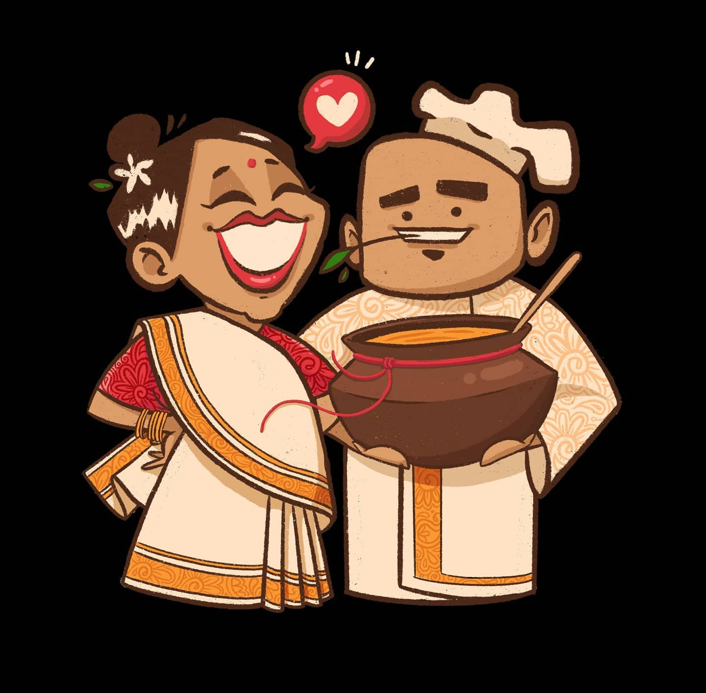

Our Journey
Our food truck started as a dream to bring the vibrant and rich flavors of South India to the streets of Tübingen. What began as a humble venture quickly grew into a beloved culinary experience. We, Alok and Prathi, are passionate about sharing the authentic tastes of our heritage, using traditional recipes that have been around for generations, but modernized and optimized to fit our tastes exactly. From the tangy tamarind to the aromatic curry leaves, each dish is a celebration of our culture and our love for food.
It's been four years now and even though it hasn't always been smooth sailing and we had to face issues we would have never expected,
we are still going strong! Just last year, our beloved food truck broke down and we couldn't operate at all for months. That sure wasn't easy,
but we found a way and came back stronger than ever with an all new Food Truck Trailer and an updated menu! (:
We are proud to offer food that reflects the diversity of South Indian cuisine, from crispy dosas to spicy sambars, and we invite you to join us on this flavorful journey. Let's see what 2026 brings and thank you for being part of our story!